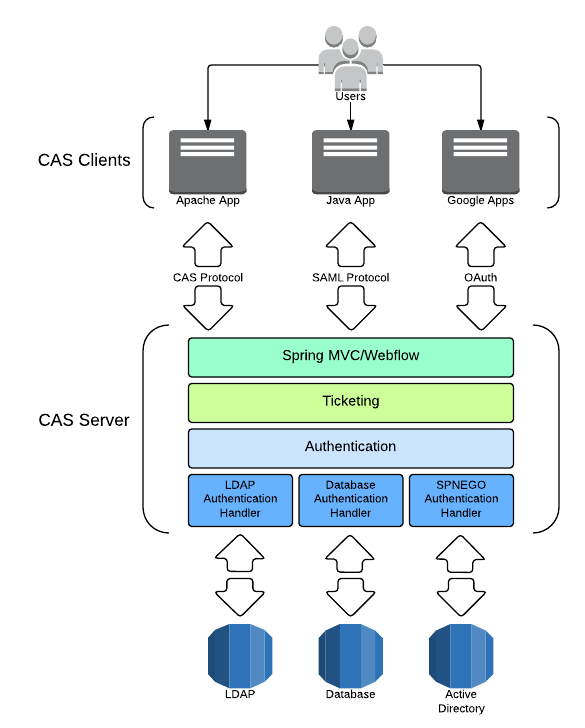

Architecture

System Components
The CAS server and clients comprise the two physical components of the CAS system architecture that communicate by means of various protocols.
CAS Server
The CAS server is Java servlet built on the Spring Framework whose primary responsibility is to authenticate users and grant access to CAS-enabled services, commonly called CAS clients, by issuing and validating tickets. An SSO session is created when the server issues a ticket-granting ticket (TGT) to the user upon successful login. A service ticket (ST) is issued to a service at the user’s request via browser redirects using the TGT as a token. The ST is subsequently validated at the CAS server via back-channel communication. These interactions are described in great detail in the CAS Protocol document.
CAS Clients
The term “CAS client” has two distinct meanings in its common use. A CAS client is any CAS-enabled application that can communicate with the server via a supported protocol. A CAS client is also a software package that can be integrated with various software platforms and applications in order to communicate with the CAS server via some authentication protocol (e.g. CAS, SAML, OAuth). CAS clients supporting a number of software platforms and products have been developed.
Platforms:
- Apache httpd Server (mod_auth_cas module)
- Java (Java CAS Client)
- .NET (.NET CAS Client)
- PHP (phpCAS)
- Perl (PerlCAS)
- Python (pycas)
- Ruby (rubycas-client)
Applications:
- Canvas
- Atlassian Confluence
- Atlassian JIRA
- Drupal
- Liferay
- uPortal
- …
When the term “CAS client” appears in this manual without further qualification, it refers to the integration components such as the Java CAS Client rather than to the application relying upon (a client of) the CAS server.
Supported Protocols
Clients communicate with the server by any of several supported protocols. All the supported protocols are conceptually similar, yet some have features or characteristics that make them desirable for particular applications or use cases. For example, the CAS protocol supports delegated (proxy) authentication, and the SAML protocol supports attribute release and single sign-out.
Supported protocols:
Software Components
It is helpful to describe the CAS server in terms of three layered subsystems:
- Web (Spring MVC/Spring Webflow)
- Ticketing
- Authentication
Almost all deployment considerations and component configuration involve those three subsystems. The Web tier is the endpoint for communication with all external systems including CAS clients. The Web tier delegates to the ticketing subsystem to generate tickets for CAS client access. The SSO session begins with the issuance of a ticket-granting ticket on successful authentication, thus the ticketing subsystem frequently delegates to the authentication subsystem.
The authentication system is typically only processing requests at the start of the SSO session, though there are other cases when it can be invoked (e.g. forced authentication).
Spring Framework
CAS uses the many aspects of the Spring Framework; most notably, Spring MVC and Spring Webflow. Spring provides a complete and extensible framework for the core CAS codebase as well as for deployers; it’s straightforward to customize or extend CAS behavior by hooking CAS and Spring API extension points. General knowledge of Spring is beneficial to understanding the interplay among some framework components, but it’s not strictly required.
Spring Boot
CAS is also heavily based on Spring Boot, which
allows it to take an opinionated view of
the Spring platform and third-party libraries to create a stand-alone web
application without the hassle of XML configuration as much as possible.
Spring Boot allows CAS to hide much of the internal complexity of its
components and their configuration and instead provides auto-configuration modules that
and automatically configure the running application context without much manual interference.